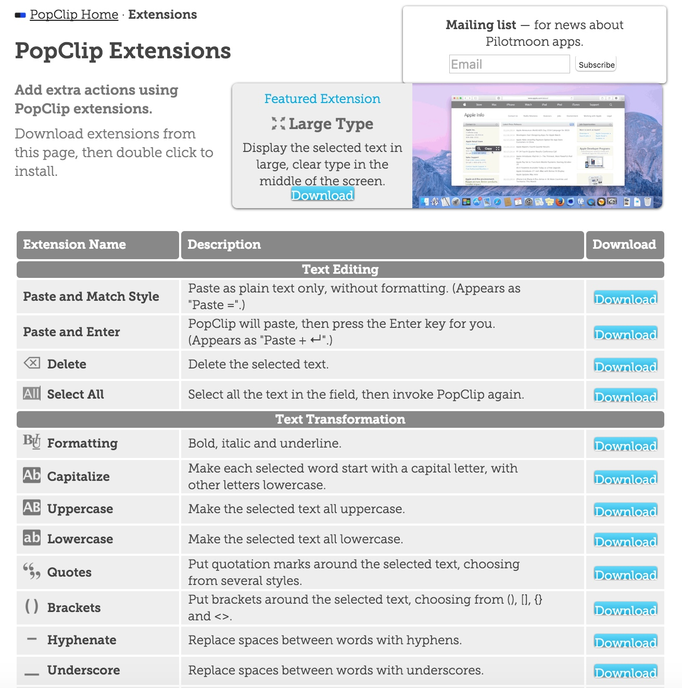
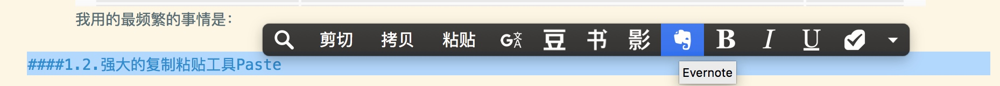
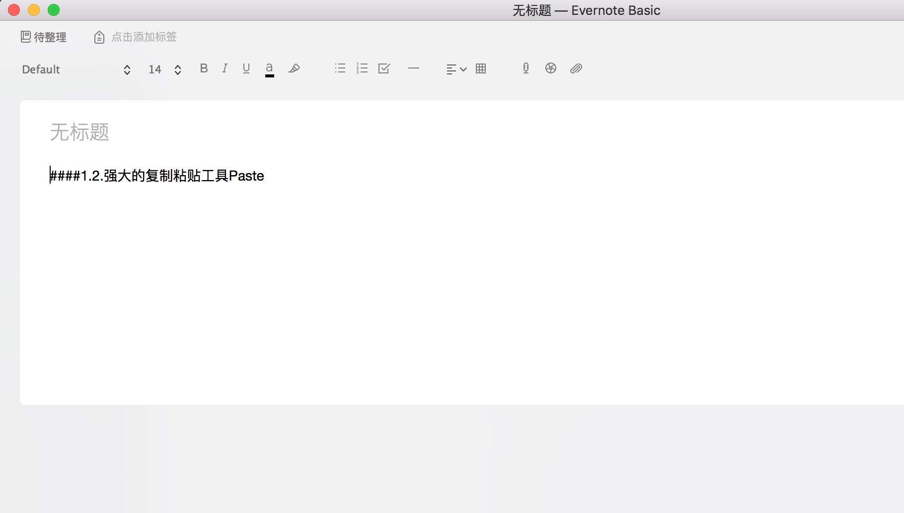
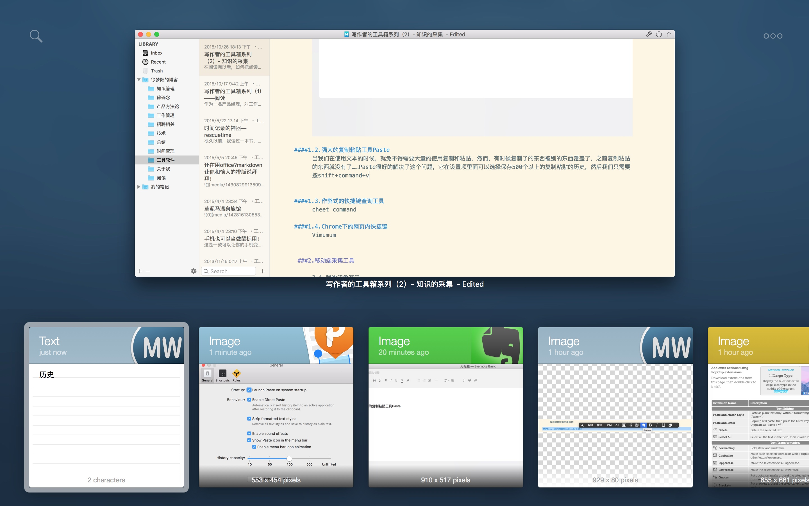
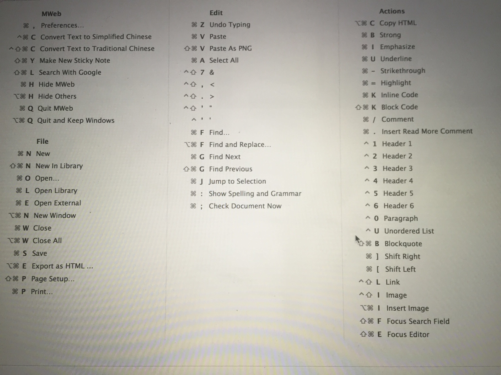
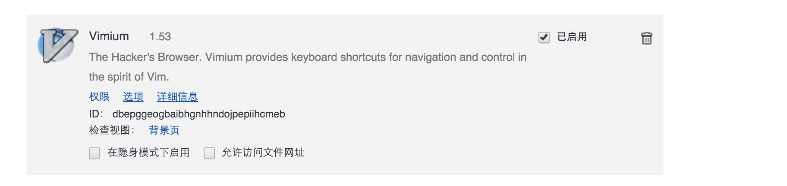
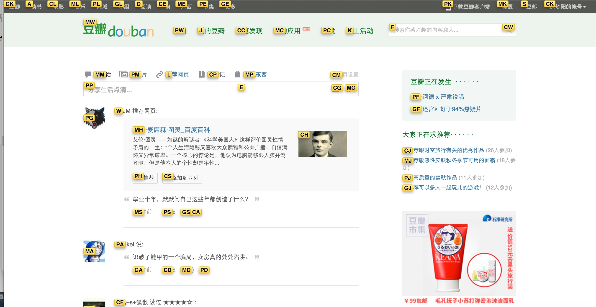
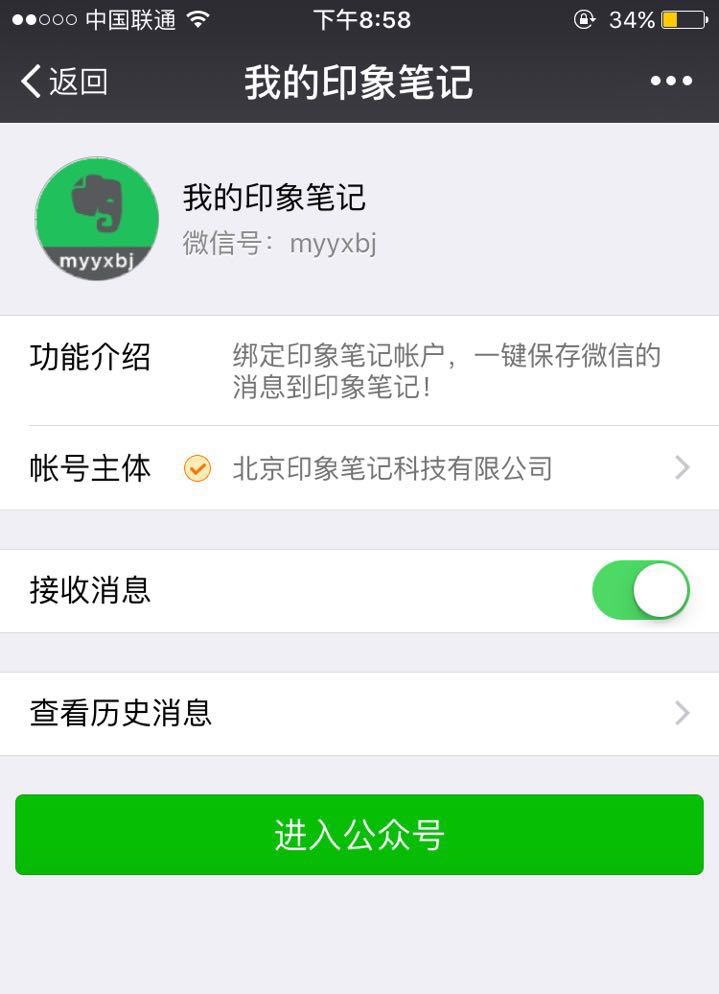
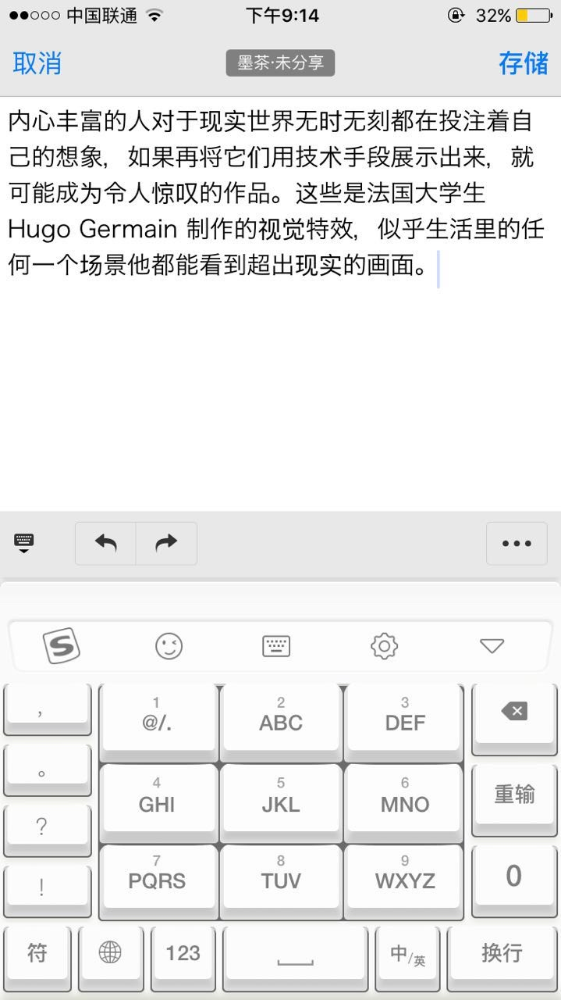
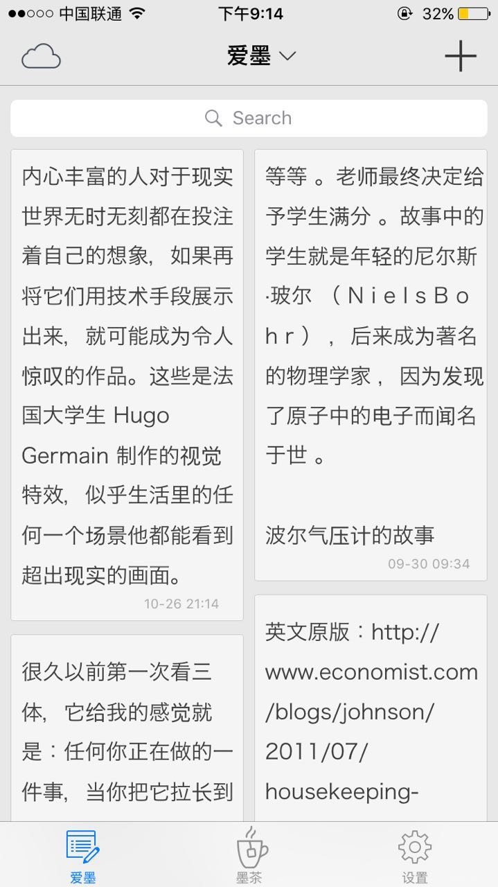

在阅读完以后，如何把阅读的结果转化为知识，就是很重要的事情了。因为一个很明显的事实就是：我们永远都不会记住我们读过的所有东西
，于是就有温故而知新
，好记性不如烂笔头
这种俗语了。随着阅读的越来越多，为了学的越来越多，我们就不得不到知识的下一个阶段，对知识进行采集。
说到采集，各种各样的工具可能会有很多，但用什么样的载体来存储这些工具呢？我用印象笔记。
1.PC端采集工具
1.1.强大的文本扩展工具PopClip
说到PopClip，它可能是Mac下面最值得买的一个软件了。PopClip 是一款在 Mac 上人尽皆知的小工具，只需要选择文本然后反白它就好，它简单高效，具有强大的拓展功能,在没有安装插件的时候，它有如下的功能。
- 粘贴
- 打开链接
- 复制
- 词典
- 拼写检查
- 邮件跳转
是不是很赞？当然它更赞的是，支持一百多个各种各样的插件，插件会有许多不同的功能。比如说支持选中文字翻译、修改文字格式、搜索豆瓣、保存到Doit.im 等等……
你只需要去它的官网，下载相应的插件，就能使用这些插件了。

之所以把它放到采集这一章来说是因为，我装了一个Evernote的插件以后，采集文本实在是太方便了！
：
只需要点一下印象笔记的按钮，就能在印象笔记里面新建一个文件了

1.2.强大的复制粘贴工具Paste
当我们在使用文本的时候，就免不得需要大量的使用复制和粘贴，然而，有时候复制了的东西被别的东西覆盖了，之前复制粘贴的东西就没有了……Paste很好的解决了这个问题，它在设置项里面可以选择保存500个以上的复制粘贴的历史，然后我们只需要按shift+command+v就可以看到历史的复制内容了

Paste与Mac结合的如此只好，以至于看起来就像是原生的应用一样。它不光能够记录复制的历史，更加能够把类别和预览展示出来，是写作者的必备神器！
1.3.作弊式的快捷键查询工具
一个高效的写作者，多半都是键盘党，比如说我就已经将近两年没有用过鼠标了，平时的操作用快捷键完全都可以解决，可是有的软件，自己根本不知道它的快捷键怎么办？这个时候就会用到这款cheet command了。当你在使用一款软件的时候，长按Command键就能看到完整的快捷键映射关系图（没法截图）

然后我们就知道快捷键啦~
1.4.Chrome下的网页内快捷键
说到快捷键，我们就不得不说chrome下的一个小插件Vimium

Vimium是一款很棒的插件，安装启用这个插件后，只需要在浏览器页面上按下F键就能看到按钮能够跳转到对应的页面

如果想退出，直接按Esc键即可。
有了这个神器，再配合浏览器上的快捷键，在浏览网页的时候，根本就用不到触控版！工作效率显著提升！
其实PC端还有很多采集工具，譬如上篇文章说的Pocket，和印象笔记的Chrome内的剪藏插件，这些都比较平常，就不再细说了。
2.移动端采集工具
除了在PC端上采集资料以外，我们往往还需要在移动端采集咨询和笔记，除了pocket以外，还有一些常用的软件
2.1.我的印象笔记
在移动端，最经常使用的是我的印象笔记微信公众号了，只需要关注：我的印象笔记

然后就可以在文章页，将其分享到自己的印象笔记里面去
然后界面提示，保存成功，我们到印象笔记里面就能找到这篇文章了。
2.2.爱墨
除了印象笔记的微信公众号，最好用的采集软件莫过于爱墨了，当你打开爱墨时，出现的会是个编辑框
，它会把你剪切板上的内容粘贴到文本编辑框内。

所以，当我们发现一本书，一个有趣的事情的时候，只需要复制文本，然后打开爱墨，就能保存为文档，同步到印象笔记了。

最后
以上写的几个软件，都是我在采集文本的过程中最经常使用的软件，而这些软件采集的内容，最终都汇总到一个地方，就是印象笔记。下一篇，我们一起再来聊聊，整理知识时候用到的软件。